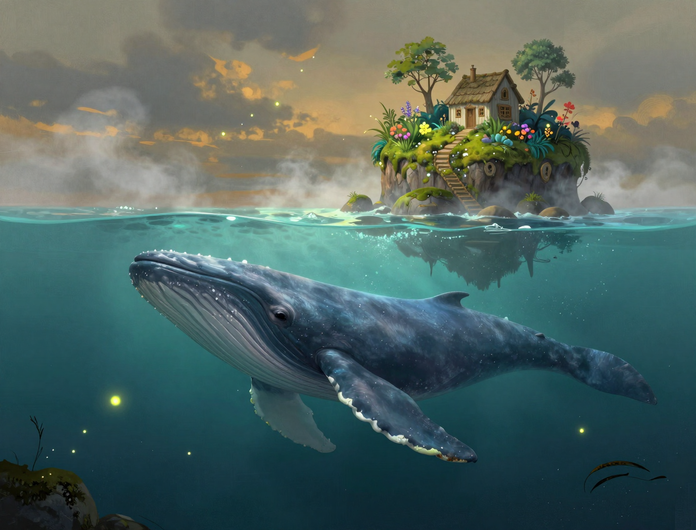

The Whale That Carried a Garden
The sea moved another stretch overnight. I counted from the gallery at first light: the Orchard is now far enough away that the rope bridge looks like a thread tied to nothing, and — I will note this plainly — it is. That is the thing about the Drift that the old chartmakers never managed to understand. Nothing here is far away. Everything is simply further away than it was yesterday, and the distance is never still.

A drift-whale surfaced at four bells, and the whole island groaned with it — though not because of the whale. Because of what was on its back. Apple trees. A cottage. Moss, a well, the whole of it. I would guess it has been carrying that garden for a hundred years, and it did not appear to mind. I asked it, properly, whether it wished to be asked about the cottage, and it breathed a long, wet breath, which is what they say when they have no intention of answering.
I have logged its heading in the Lamp Log, the way the old keepers did, the way my grandmother did before the light reached her. If the islands keep their slow argument with each other, then someone will have to be the one standing on a bridge that no longer quite reaches, and I would rather it be me than the cat. The cat would only look offended at the distance.
Fuel: three days of oil, which is plenty. Sea state: calm, sullen. The Unraveling has not touched the edge of the map today, and I am counting that as a win, because lately the wins arrive like that — small, and only just.